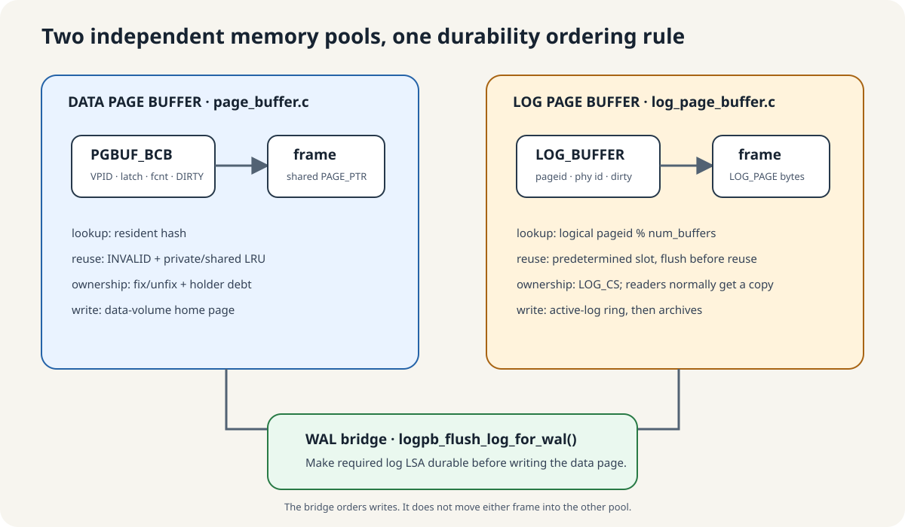
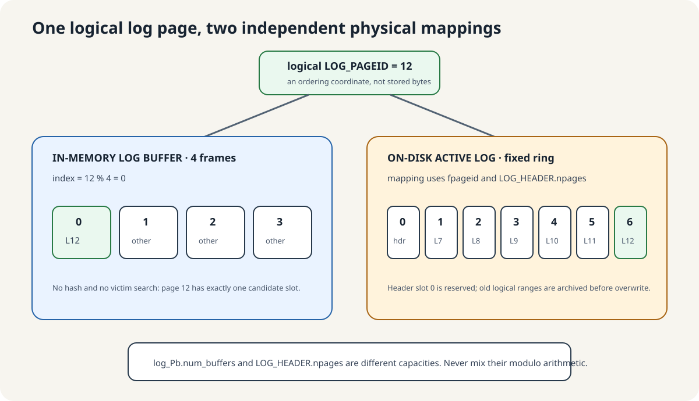
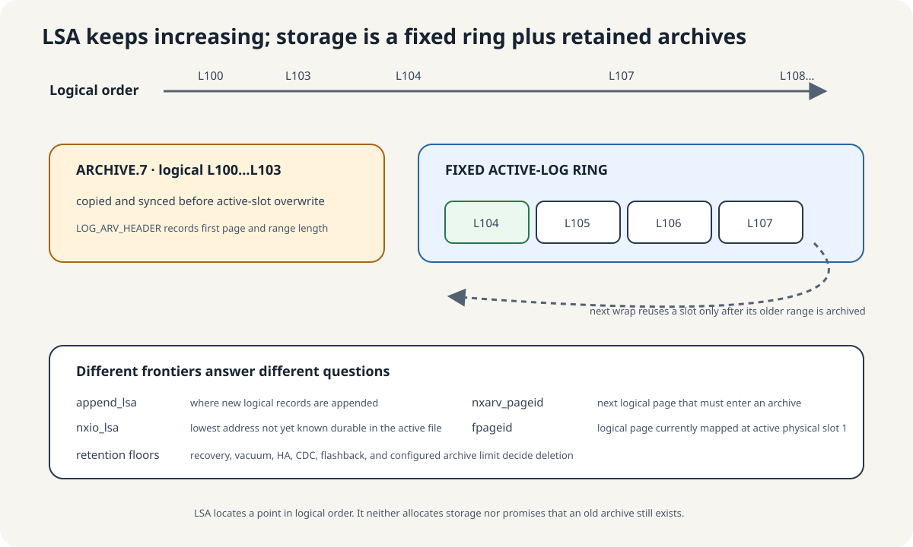

Log pages have their own descriptors and frames

page_buffer.c and log_page_buffer.c are independent buffering subsystems. The include and call relationships coordinate them; they do not place log pages in the data-page pool.
| Question | Data page | Log page |
|---|---|---|
| Descriptor | PGBUF_BCB | LOG_BUFFER: logical page ID, active physical ID, dirty bit, frame pointer |
| Lookup/reuse | VPID hash, INVALID and LRU policy | logical_pageid % num_buffers; predetermined slot, flush before reuse |
| Caller ownership | Shared pointer, latch, fix/unfix, holder debt | Reader normally gets a copy in caller storage; no BCB fix ledger |
| Disk home | Data-volume page | Fixed active-log ring or archive |
The append code sometimes calls its current page “fixed,” but LOG_BUFFER has no fcnt, holder, BCB waiter queue, hash link, or LRU link. It means that the log append protocol retains that frame under log synchronization.
WAL joins the pools by ordering durability. It never moves one pool's frame into the other.
Modulo indexing replaces hash lookup and victim selection

For a four-frame toy pool, pages 0–3 map to slots 0–3 and page 4 maps back to slot 0. A log page has exactly one candidate memory slot, so there is no LRU scan for a victim. A hit uses that frame; a clean collision changes identity and reads or initializes the requested page. A dirty collision is unexpected and has a defensive flush path.
Modified append pages are retained in logical order in toflush[]. Its usable maximum is num_buffers - 1; reaching it forces an append-page flush before modulo wrap can collide with an unflushed page.
At the pinned default, log_buffer_size=16,384 pages. With 16 KiB log pages, the frame area is 256 MiB, plus descriptors and auxiliary state. This memory is separate from the default 512 MiB data page buffer.
Records are staged, copied into append pages, and made durable in order
- A
LOG_PRIOR_NODEstages the record and receives a logical LSA. - The append path copies its header and undo/redo bytes into the current direct-mapped
LOG_PAGE. - Crossing a page boundary advances
append_lsa.pageidand adds the next frame totoflush[]. logpb_flush_all_append_pages()batches pages but writes the page containingnxio_lsalast, then syncs the active-log file.nxio_lsaadvances to the lowest address not yet known durable.
An ordinary reader supplies its own LOG_PAGE storage. logpb_fetch_page() normally copies a resident or on-disk log page into it, so there is no later pgbuf_unfix(). The append writer is the distinct path that directly retains and mutates the current pool frame.
The active log is a fixed ring; archives preserve older ranges

At the default 512 MiB log volume and 16 KiB pages, the active file has 32,768 physical pages: one header and 32,767 data-log slots. Logical page IDs keep increasing while physical slots wrap relative to fpageid.
Before a slot is reused, the older logical range is copied and synced into a numbered archive. Background archiving incrementally prepares a temporary archive to smooth this copy cost. It is not the data-page double-write buffer.
| Frontier | Meaning |
|---|---|
append_lsa | Current/next logical append position |
nxio_lsa | Lowest log address not yet known durable |
nxarv_pageid | Next logical page that must enter an archive |
fpageid | Logical page currently stored at active physical slot 1 |
An LSA names the logical coordinate (page ID, offset). It does not allocate or retain storage. The representation is extremely large but finite; readable history depends on the active ring, archive files, and recovery/vacuum/HA/CDC/flashback/retention constraints.
WAL makes the log durable before the changed data page
A dirty data page carries the LSA of the newest logged change in its bytes. Before writing that BCB frame to its data volume, page buffer calls logpb_flush_log_for_wal(). If the page LSA is at or beyond nxio_lsa, append log pages are flushed and synced first.
After a crash, recovery must be able to find the record that explains every changed data page already on disk. This write order provides that prerequisite.
Pinned-source audit: CUBRID log page buffering from first principles.
Checkpoint coordinates a selective page propagation
- Log code flushes append state and records checkpoint start.
- Page buffer selectively flushes qualifying dirty pages up to the checkpoint boundary and reports the remaining redo floor.
- Filesystem synchronization establishes its configured boundary.
- Log code records active transaction/system-operation state and persists end-checkpoint/header state.
- Permanent-volume checkpoint metadata is recorded and synchronized through the configured DWB boundary.
Page buffer contributes selective page propagation. It does not own the complete checkpoint record, WAL, filesystem sync, or volume metadata protocol.
Verified mechanism: pinned checkpoint coordination is log_page_buffer.c:6901–7406.
Compare before applying

Equal means already represented: record LSA ≤ page LSA is skipped.
- Recovery fixes the caller-supplied identity with
RECOVERY_PAGE, WRITE, unconditional access. - Compare the redo record LSA with the current page LSA.
- If
record_lsa <= page_lsa, unfix and skip: the page already represents that change or a later one. - Otherwise apply the selected recovery callback under WRITE protection.
- Advance page LSA to the record LSA, mark the page DIRTY as the recovery protocol requires, and release on every exit.
Verified mechanism: gate at log_recovery.c:497–536; fetch semantics 6407–6431; apply/LSA/cleanup log_recovery_redo.hpp:587–668.
Page LSA 140: skip 120, skip 140, apply 170
| Redo record | Compare with page LSA | Action | New page LSA |
|---|---|---|---|
| 120 | 120 < 140 | Skip and release. | 140 |
| 140 | 140 = 140 | Skip and release. | 140 |
| 170 | 170 > 140 | Apply callback, set DIRTY, release. | 170 |
Revisiting record 170 now skips because the page LSA is already 170. That is the page-change idempotence argument. It is not a blanket promise that arbitrary callback side effects outside the page are idempotent.
Recovery-specific allocation history selects the fetch mode
RECOVERY_PAGE, OLD_PAGE_DEALLOCATED, and OLD_PAGE_MAYBE_DEALLOCATED encode recovery’s knowledge of redo/undo and allocation history. They may accept or skip states that ordinary OLD_PAGE validation rejects.
If a page was deallocated after the logged record, redo can skip it; that skip creates no fix debt. File/disk code still owns logical allocation and deallocation. Page buffer materializes or coherently invalidates the identity chosen by those owners.
Recovery still performs a logged-page-style state transition
Once the gate chooses to apply, the familiar ownership sequence returns: WRITE-protected bytes are modified, page LSA records the latest represented log action, DIRTY publishes propagation debt, and scope cleanup repays the fix on every exit.
The difference is who chooses meaning. Recovery selects the callback and special fetch mode from the log record; the generic page-buffer Module supplies resident identity, byte protection, LSA interface, dirty state, and release mechanics.
A stack guard unfixes the pointer when this function scope ends
After the fix/gate says redo should continue, log_rv_redo_record_sync() constructs a local scope_exit unfix_rcv_pgptr. The guard captures thread_p and the stack-local rcv by reference. Its destructor calls pgbuf_unfix_and_init_after_check(thread_p, rcv.pgptr).
- If
rcv.pgptris non-null, the helper callspgbuf_unfix()exactly once and sets the pointer to null. - The destructor runs on normal fall-through and on the explicit early return after redo-data extraction fails.
- The guard was declared after
rcv, so reverse destruction order runs the cleanup whilercvis still alive. - If a callback leaves the pointer null, cleanup is a no-op. Paths that skip before the guard is constructed already assert a null pointer.
Verified mechanism: guard use is log_recovery_redo.hpp:601–668, the null-safe unfix-and-clear helper is page_buffer.h:64–71, and the guard destructor is scope_exit.hpp:28–80.
Crash redo needs controlled restart evidence
Existing checkpoint/backup observations do not prove restart redo, per-page WAL ordering, DWB recovery, torn-page handling, or home-page persistence. Source establishes intended gates. Runtime evidence for crash safety requires controlled crash points, exact build/configuration, and post-restart state validation at the claimed boundary.
Decide skip, apply, or no-debt absence
Prompt
Checkpoint returned a redo floor. During restart, a page has LSA 140 and receives records 120, 140, and 170; another target page was deallocated.
Your task: assign each operation to its owner, decide every skip/apply/debt result, and state exactly what the scenario does not prove about crash persistence.
Paste your answer into the chat. I will check comparison direction, owner boundaries, debt, and crash-evidence language before recording Advanced progress.
Trace the skip before the callback
Read pinned log_recovery.c:497–536 and log_recovery_redo.hpp:587–668. Mark special fix, absent-page skip, page-LSA comparison, callback, LSA advance, DIRTY publication, and scope cleanup.